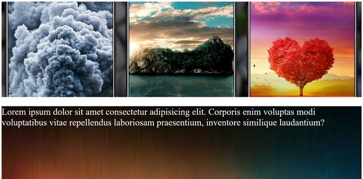

{kind=link}

Réalisations
Vintage, Design
Collection complète d’ameublement des magasins Ispace aux styles divers et variés : classique, design, retro, deco, etc. Notre large gamme de mobilier vous permet d’aménager toutes les pièces de la maison.

Entrer en agence, mode d’emploi
Ma première aventure avec une agence d’illustration fut issue d’un contact suite à un portfolio « gratuit » dans un magazine spécialisé (comme cela existe généralement) ; à cette époque, je n’aurais jamais imaginer intégrer une agence photo.

Stockage en nuage
Traduit de l'anglais-Le stockage en nuage est un modèle de stockage de données informatiques dans lequel les données numériques sont stockées dans des pools logiques, dits sur «le cloud». Le stockage physique s'étend sur plusieurs serveurs et l'environnement physique est généralement détenu et géré par une société d'hébergement.

Original, Cupcakes ces Gâteaux sur-mesure
Un cadre original et chaleureux où les gourmands se retrouvent pour déguster des plaisirs sucrés salés. Cupcakes ravissants, cheesecakes audacieux, tartes salées savoureuses sont fabriqués quotidiennement pour satisfaire toutes vos envies.

N°1 des arts martiaux et des sports de combats
Retrouvez tous les vêtements, accessoires et équipements produits par la marque Metal Boxe et dédiés aux sports de combat et aux arts martiaux sur cette page. Si vous êtes fan de Metal Boxe, cette sélection de produits disponibles sur Dragon Bleu est faite pour vous !

{kind=link}
Parallaxe, effet d'optique
La parallaxe est l’impact d'un changement d'incidence d'observation, c'est-à-dire du changement de position de l'observateur, sur l'observation d'un objet. En d'autres termes, la parallaxe est l'effet du changement de position de l'observateur sur ce qu'il perçoit.

Quelle école choisir ?
Les classements sont de bons indicateurs de la qualité de ces établissements et de leurs formations, pour vous aider à choisir votre future école.

Zones sèches dans le monde
Les régions de désert couvrent 35% de la surface terrestre. Des déserts ont été classifiés dans le désert subtropical, l'hiver froid et les déserts côtiers frais du monde. De la carte du monde de désert, il peut apprendre que les déserts subtropicaux se trouvent entre la ' latitude 15 et 30. Ils sont centrés le long des tropiques du Cancer et du Capricorne.

Différence entre pop-up et pop-in
la pop-in est codée directement dans la page web consultée par l’utilisateur: elle peut être personnalisée, contrairement à la pop up.La pop-up est une nouvelle fenêtre de navigateur web ouverte par le système d’exploitation du terminal.

Licorne,en e-commerce
La licorne, parfois nommée unicorne, est une créature légendaire à corne unique. Son origine, controversée, résulte de multiples influences, en particulier de descriptions d'animaux tels que le rhinocéros et l'antilope, issues de récits d'explorateurs.

La Laponie suédoise
Une visite en Laponie suédoise vous transportera dans un monde unique combinant de vastes espaces naturels, une culture sami authentique et des spécialités culinaires.